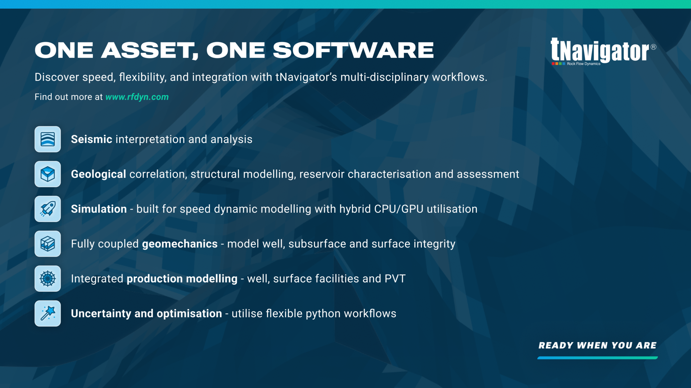
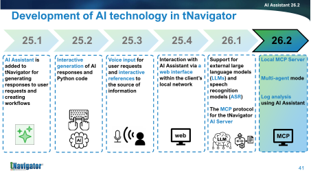
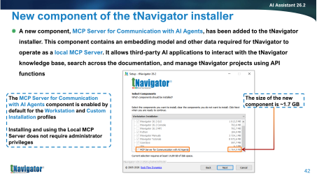
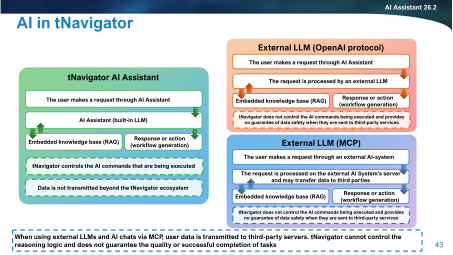
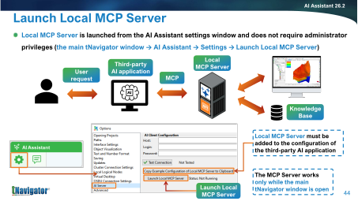
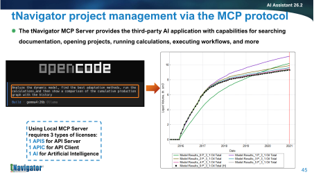
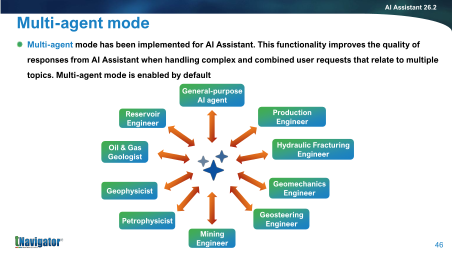
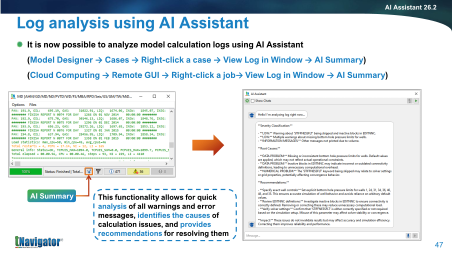

ROCK FLOW DYNAMICS
WEBINAR SERIES

AI Powered Workflows
ZAKHAR LANETC | RESERVOIR ENGINEER
ALEKSANDR ZHURAVLEV | SENIOR PETROLEUM ENGINEER
AUS Webinar Series cover (series deck slide 3 format), both authors in identical style. 20–25 min total; keep the talking intro under 4 minutes.

Series marketing slide, shown while people join. One line: tNavigator covers seismic to surface in one platform.
ROCK FLOW DYNAMICS
WEBINAR SERIES
All participants automatically muted

Q&A through the chat function
Session is being recorded
Housekeeping, 20 seconds: muted, questions in chat (answered at the end), recorded, email for follow-ups.
AI in tNavigator 26.2
Today, in 20 minutes
The map: built-in AI Assistant, external LLMs, and the new MCP Server
2 minAsk, refine, apply: a contextual conversation based on tNavigator sources
3 minBlank project → simulation results: an AI agent builds and runs a model in tNavigator
6 minAI agent at work: assisted history matching + a 10-year DCA forecast, with dashboards
6 minHow to get started & takeaways: installer, licenses, one button in the GUI
3 min
working examplesslides
Set expectations: green items are working examples, executed in the real tNavigator GUI. The demonstrations are shown through recordings of the live tNavigator GUI.
AI in tNavigator 26.2
Six releases of AI, one direction
25.1- AI Assistant introduced: responses & workflow generation
25.2- Interactive generation of responses and Python code
25.3- Voice input
- Interactive references to sources
25.4- Web interface on the local network
26.1- External LLMs & speech recognition
- MCP protocol for the AI Server
26.2- Local MCP Server
- Multi-agent mode
- Log analysis with AI Assistant
Today’s focus: the Local MCP Server, which connects external AI agents directly to tNavigator.
Story: steady build since 25.1, one feature per breath. Land on 26.2 and name the three headliners; bridge into "so what are your options" (next slide).
AI in tNavigator 26.2
Three ways to run AI with tNavigator
Built-in AI Assistant
ModelLLM shipped with tNavigator, on your hardware
KnowledgeEmbedded knowledge base (RAG)
ControltNavigator controls executed AI commands
DataStays within the local tNavigator environment
External LLM via OpenAI-compatible API
ModelYour LLM endpoint, called by AI Assistant
KnowledgeEmbedded knowledge base (RAG)
ControlAI Assistant mediates command execution
DataSent to the LLM provider
today's demo
External AI agent via MCP
ModelAny MCP client: Claude, Codex, OpenCode, etc.
KnowledgeEmbedded knowledge base (RAG)
ControlThe agent plans; tNavigator executes its calls
DataDepends on the MCP client and model provider
Cloud-hosted LLMs and agents may send user data to third-party servers. Choose the client, model and deployment according to your data policy.
Say the caveat out loud — owning it defuses the security question before it's asked. Built-in = data stays inside; MCP = maximum capability, user-managed risk.
AI in tNavigator 26.2
One protocol, the whole platform
What the MCP Server lets an agent do
Search tNavigator docs and the Workflow Python API
Open, create and copy tNavigator projects
Execute workflows with the full Model Designer API
Run calculations and read results back
Licenses for the Local MCP Server
1 × APISAPI Server
1 × APICAPI Client
1 × AIArtificial Intelligence
Ships as an installer component: "MCP Server for Communication with AI Agents" (~1.7 GB, default in the Workstation profile). No administrator privileges required.
That’s the capability on a slide. Now let’s put it to work, starting with the simplest one: asking questions grounded in tNavigator sources.
Flag the three license features now, repeat in the close. Mention: protocol is open — the release deck shows the same thing driven by OpenCode + Gemma; we use Claude and Codex. Any compatible MCP client can connect. Then the three demos run back to back: search, build, engineer-level work.
Live · demo 1 · the exchange
Ask, refine, apply
Not a one-shot Q&A. The agent bases answers on tNavigator sources, keeps the context, then narrows it to the engineer's actual needs.
1How do I set up relative permeability hysteresis in tNavigator? Cite the relevant tNavigator manuals and tutorials.
2How can I define it directly in a tNavigator .DATA deck?
3Give me a clear example.
6
Frame this as a contextual conversation, not search plus one answer: broad workflow first, then the deck-only constraint, then a concrete keyword example. Point out that the agent retains context between turns.
Live · demo 1 · the exchange · recorded
A conversation that keeps the context
Guidance supported by cited tNavigator sources → deck-only implementation → a clear keyword example.
7
Play the 63-second recording. It shows a real three-turn conversation: the agent cites the hysteresis documentation, adapts to the .DATA-deck constraint, and finishes with a concrete example. Emphasise context retention, not just question answering.
Live · demo 2 · model building
Blank project → simulation results
One conversation. The agent builds a complete black-oil model in tNavigator, runs the simulation, and reads the results back.
1Grid, properties, PVT, rel-perm: one request
2Well placed & perforated: watch the 3D view
3Strategy set, the simulation runs
4Production profile: cumulative oil
8
Introduce the recording with Codex and the live GUI side by side. Leave this slide up ~10 s so the audience knows the four beats to watch for.
Live · demo 2 · model building · recorded
The complete build
One conversation over the GUI-hosted MCP connection: the live tNavigator project on the left, Codex on the right. Grid, PVT, rel-perm, well, strategy, run. Final cumulative oil production: 217,042.25 sm³.
Video placeholder — drop the screen recording at
deck/assets/route_a_first_oil.mp4
How to reproduce and record the build, step by step with the proven
workflow-API call sequence: deck/ROUTE_A_LIVE_BUILD.md
9
PACING: this whole act is 6 min — one connection sentence, the 1:34 video, then read the production profile back. Play the accelerated recording of demo 2. It preserves the complete project-control sequence and final simulation result. Recording script and the full call sequence: ROUTE_A_LIVE_BUILD.md.
AI in tNavigator 26.2
AI agent at work: match, forecast, report
Using BLACK_OIL_DEMO, the agent ran 616 simulations: differential-evolution history matching, a 200-run sensitivity study, segmented per-well DCA, and a 10-year forecast. The interactive dashboards below show cumulative field error falling from 54% to 7.3% for water and from 12% to 1.6% for oil, with measured BHP included in the objective.
PACING: the HM act owns 6 min — take the dashboards slowly, per-well panels, measured-BHP diamonds, then the Pareto cross plot slide gets its full story. Be transparent: the campaign was pre-computed (~1 h of simulations). Interact with the two embedded dashboards and scroll — objective function 65.1 → 2.77, per-well water-cut panels, and DCA panels with one Arps fit per decline cycle. The 10-year DCA volume is 1.31 Msm³, the simulated volume is 1.09 Msm³, the gap is 17%, and field EUR is 2.46 Msm³.
AI in tNavigator 26.2
How the agent tested, learned and converged
1Match the rates: the first result looks convincing.
2Check the pressure: BHP data exposes the false optimum.
3Test hypotheses: skins, corridors and completions are evaluated individually.
4Screen, then optimise: sensitivity analysis identifies the influential parameters.
5Choose the trade-off: the agent maps the Pareto front on a cross plot; the engineer selects the compromise.
The marketing beat: the agent executed everything: decks, 616 runs, diagnostics, dashboards. The engineer supervised and judged: rejected the artificial skin step, demanded the sensitivity-first methodology, made the final Pareto call. AI does the work, the engineer stays the engineer. Each iteration loop was minutes, not days.
AI in tNavigator 26.2
Connecting tNavigator to MCP: two options
From the GUI · Local MCP Server
LaunchSettings → Options → AI Server → Launch Local MCP Server
ScopeDocumentation and API search, plus full control of the open project
RunsWhile the main tNavigator window is open, on your workstation
Best forInteractive project work with live GUI control
Standalone · tNavigator AI Server
LaunchInstalled as a service in MCP-only mode, no GUI needed
ScopeDocumentation and Workflow Python API search over HTTP
RunsAlways on, CPU only, modest hardware; serves the whole team
Best forA shared, permanent knowledge-base endpoint
No separate download: both servers are bundled with tNavigator 26.2 as installer components and support compatible MCP clients over HTTP.
Left = the route used for project-control demos; it needs the GUI open. Right = the headless deployment for teams; it is the same binary that powers the full AI Assistant server, run in MCP-only mode. Both come out of the standard installer, with no separate download.
AI in tNavigator 26.2
Try it Monday morning
1Install the component
tNavigator 26.2 installer → "MCP Server for Communication with AI Agents". On by default for Workstation installs. No admin rights needed.
2Launch from the GUI
Settings → Options → AI Server → Launch Local MCP Server. Runs while the main tNavigator window is open.
3Connect your AI client
Copy the example MCP configuration from the dialog and adapt it for Claude, Codex, OpenCode, or another compatible MCP client.
Cloud-hosted agents may send project data to third-party servers. Select the client, model and deployment according to your data policy; the built-in AI Assistant keeps processing local.
The dialog has a "Copy Example Configuration of Local MCP Server to Clipboard" button — mention it, it makes step 3 trivial. Backup slide 44-image shows the actual dialog.
Takeaways
The simulator now speaks AI
- Built in or connected: use tNavigator’s local AI Assistant, or connect external agents through MCP.
- From questions to calculations: agents can search, build, run, match, forecast and report.
- Engineering judgment stays human: the agent executes; the engineer reviews and decides.
14
Backup slides follow — press → only if needed in Q&A: original release slides 41–50.
ROCK FLOW DYNAMICS
WEBINAR SERIES
Thanks for listening!Q&A
Next webinar: Wednesday 5th August 11am (AWST)
A Geometry-driven approach to modelling: Exploring RBF
asktNav@rfdyn.com | www.rfdyn.com
Series closing format. Take questions from chat. Next-webinar line follows the series schedule (RBF, 5 Aug); the template's own slide 10 lists 29 July because each closing announces the following session.
Backup · Q&A
Backup slides
Original release slides 41–50

Official timeline slide.

Q: "what exactly do I install?"

Official architecture diagram behind our slide 4.

The actual GUI dialog for step 2/3.

Official capability slide incl. license note; opencode + gemma example.

Q: multi-agent — specialist agents routed by topic, on by default.

Q: "can it debug?" — AI Summary on any calculation log; show live if the GUI is open.